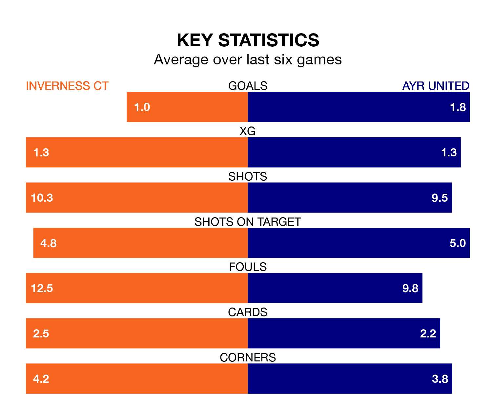

Saturday's match at the Tulloch Caledonian Stadium sees two relegation candidates play each other, as ninth-ranked Inverness CT host eighth-placed Ayr United.
Inverness CT have picked up 31 points from their first 31 Championship games, with seven wins and 10 draws.
That is one point less than the Honest Men have collected, having won nine and drawn five.
In the last 10 years, Inverness CT and Ayr have played each other on 23 occasions. Inverness CT won 12 of them, Ayr four, and they drew seven times.
On average, ICT scored 1.6 goals and the Honest Men 1.0 in those matches.
Their last meeting was on January 6, when Inverness CT won 3-1 away.
With 32 goals in 28 games so far this season, Inverness CT are scoring at below the league average rate with 1.1 goals per game. But they are conceding fewer than average too, letting in 32 goals at a rate of 1.1 per game.
Ayr, meanwhile, are average scorers, with 1.4 goals per game. They have conceded 1.9 goals per game.
In Mark Ridgers, ICT can rely on one of the league's safest pair of hands. He has kept six clean sheets in his 28 appearances this season in the Championship.
In United's net, Charlie Albinson has four clean sheets in 18 games. He has conceded a goal every 59 minutes, 40% more often than the 84 minutes between goals for Ridgers.
The home team are in mixed form in the Championship, with one win and four draws from their last six games.
With three wins and three losses over that period, the Honest Men's form is slightly better – they have taken nine points from 18, compared to Inverness CT's seven.
Inverness CT's last match was on March 9, a 0-0 draw against Airdrieonians.
Ayr lost 2-0 against Dunfermline Athletic last time out, on March 2.
Saturday's match will be refereed by Iain Snedden, who has taken charge of eight Championship games so far this season, issuing one red card and booking 38 players. He has awarded three penalties.
The last Inverness CT game Snedden refereed was a 2-1 home loss to Arbroath on December 16. His last Ayr match was their 3-1 loss away at Inverness CT on November 11.
Updated: 15:10 (UTC), 15/03/24